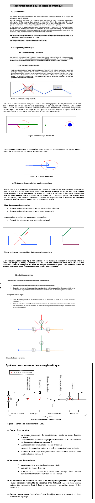

3.1. Structuration du réseau d’Eau Potable sur QWAT
3.1.1. Ordre de saisie des différents type d’objets
La mise à jour sur QWAT se fait dans l’ordre suivant:
Points de construction qwat_od.node, pour tous les:
points de construction
Té
Bouchon
Changement de matériau
Changement d’année
Changement de diamètre
Création des conduites qwat_od.pipe, pour toutes les:
Conduites principales (réseau)
Conduites hydrantes
Conduites de branchement
Conduites de branch. secondaire
Conduites de transport
Conduites d’arrosage
Création des pièces d’installation qwat_od.vw_element_part, pour tous les:
Croix
Changement de pente
Coude
Manchon
Collier de prise
Bouchon
Bouches d’arrosage
Autres pièces diverses
Création des points d’introduction, pour tous les:
Points d’introduction
Création des vannes qwat_od.valve, pour toutes les:
Vannes réseau
Vannes hydrant
Vannes de prise
Vannes de prise secondaire
Vannes de régulation
Purge
Vannes de vidange automatique
Création des bornes hydrantes qwat_od.vw_element_hydrant, pour toutes les:
Bornes hydrant
Création des manchons de réparation, pour tous les:
Manchon de réparation
Création des ouvrages, pour tous les:
Ouvrages qwat_od.vw_element_installation
Couvercles qwat_od.cover
3.1.2. Directive de saisie des conduites
Warning
Cette partie est susceptible de changer en fonction du développement de QWAT. Le projet étant inité par les communes vaudoises (CH), elle se base sur les directives du SIRE. En la matière, il existe plusieurs numérisations possibles des réseaux d’eaux. Des modifications pourront être apportées suivant l’évolution du projet et des règles en vigueur.
La saisie du réseau doit être effectuée en respectant les directives fixées par SIRE, selon les exemples ci‐après.
